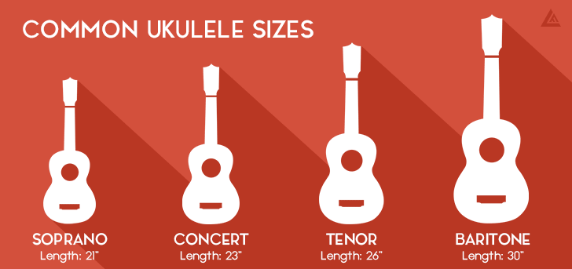
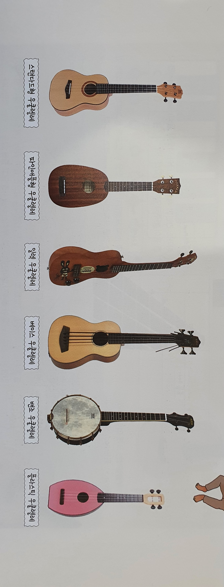
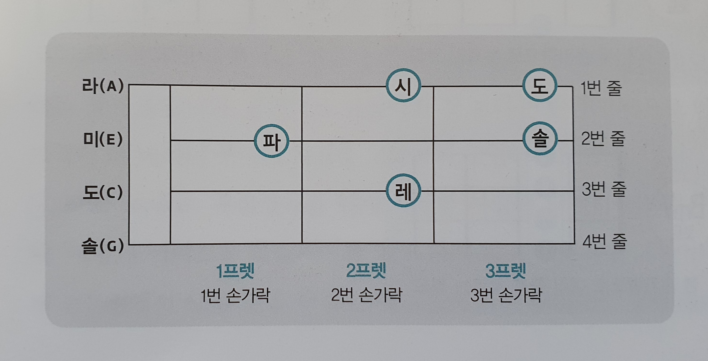

우쿨렐레 이름의 유래
- 우쿨렐레는 하와이 전통 악기이다.
- 이름은 우쿨(벼룩)+렐레(톡톡튄다)라는 뜻을 갖고 있다.
우쿨렐레의 종류
- 소프라노 우쿨렐레 : 작은 사이즈의 우쿨렐레로 통통 거리고 밝은 소리를 낸다.
- 콘서트 우쿨렐레 : 소프라노와 테너의 중간 사이즈로 우리나라에서 가장 흔하게 볼 수 있습니다.
- 테너 우쿨렐레 : 큰 사이즈의 우쿨렐레로 손이 큰 사람에게 적합하고 연주곡에 많이 쓰입니다.
- 바리톤 우쿨렐레 : 가장 큰 우쿨렐레로 다른 우쿨렐레 보다 사용 빈도가 극히 적습니다.
하지만 바리톤을 연주하는 세계적인 연주자도 있습니다.


우쿨렐레 코드 읽기

- 1. 세로줄
- - 악보상 : 위에서부터 차례로 1, 2, 3, 4번 줄
- - 악기상 : 아래에서부터 차례로 1, 2, 3, 4번 줄
- - 조율음 : 1번 줄부터 차례로 라(A), 미(E), 도(C), 솔(G)
- 2. 가로칸
- - 왼쪽부터 차례로 1, 2, 3 ··· 프렛
- - 코드를 누를 때 하나의 손가락으로 한 칸을 누른다.